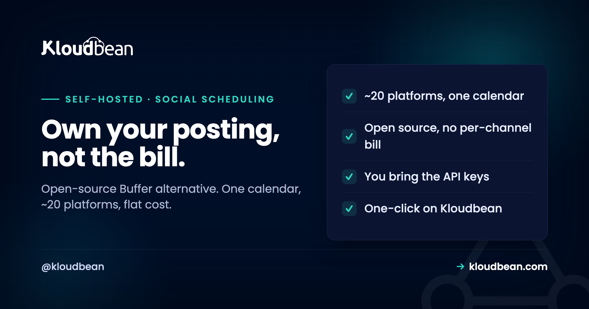

Self-Host Postiz: The Open-Source Buffer Alternative, and Its Real Catch

If you post to more than a couple of social accounts, you have felt the bill. Buffer, Hootsuite, and the rest charge per channel or per seat, and the number climbs exactly as your reach does. Postiz is the open-source answer: one calendar that schedules to around twenty platforms, with an AI copilot, analytics, and a team workspace, all on a server you own at a flat cost. It is genuinely good. But there is a catch the quick tutorials skip, and it is not the install. It is that self-hosting a social scheduler means you become the one who wires up API access to every platform. This guide is honest about that, and about the fact that this app holds the keys to your accounts.
Postiz is an open-source social media scheduling tool, a self-hosted alternative to Buffer and Hootsuite, covering around twenty platforms from one calendar with an AI copilot, media library, analytics, and team workspace. Self-hosting makes sense when per-channel or per-seat pricing stings, which happens fast for creators with many accounts and agencies posting for many clients. The real work is not installing it, it is registering a developer app and providing OAuth credentials for each platform you connect. And because it stores tokens to your social accounts, keeping it patched and behind HTTPS is not optional. On Kloudbean it is a one-click app on a managed server, so the install and the database are handled and you can focus on the API setup that actually matters.
What Postiz actually is
A single place to plan and publish across most of the social web, without renting it.
Postiz gives you one posting calendar that reaches around twenty platforms: X, LinkedIn, Instagram, Threads, TikTok, YouTube, Bluesky, Mastodon, Reddit, Discord, Slack, Telegram, and more. On top of scheduling it adds an AI copilot for drafting posts, a media library for your images and video, analytics, a team workspace so more than one person can work the calendar, and a public API. It is open source under the AGPL, so you can run it yourself and keep your whole content operation in-house.
The pitch is the same as the rest of this category: the hosted tools charge you more as you grow, and a self-hosted Postiz costs the same whether you run three accounts or thirty. For the right user that is a real saving. For the wrong user it is a weekend spent solving a problem they did not have. The next section is about telling which one you are.
Why self-host it, and who shouldn't
The case is mostly about scale and money, with a real ownership angle underneath.
The per-channel bill. Buffer and Hootsuite price by channel and by seat, so a creator running many profiles, or an agency posting for a roster of clients, watches the monthly cost track their growth. A self-hosted Postiz serves all of it from one server at a flat cost. For an agency this is the same logic as the rest of the stack, and it sits naturally alongside the agency hosting playbook. You own the schedule and the data. Your content calendar, your analytics, and your connected accounts live on your infrastructure, not a vendor's. No lock-in. Open source means the tool cannot be discontinued or repriced out from under you.
Who shouldn't bother: someone posting to one or two accounts, casually. The hosted tools have free or cheap tiers that cover light use without you running anything, and the per-platform API setup below is more effort than a casual poster should sign up for. Self-hosting Postiz pays off at many accounts, with a team, or where cost and data ownership genuinely matter. Be honest with yourself about which you are before you start.
The catch nobody warns you about: per-platform API setup
This is the part that surprises people, so let me put it before the install, not after.
When you use hosted Buffer, connecting your X or LinkedIn account is one click, because Buffer has already done the hard part: it registered as a developer with each platform and had its API access approved. When you self-host, that pre-approved access does not come with the software. You are now the developer. For each platform you want to post to, you generally register a developer application in that platform's developer portal, create API credentials, and paste the resulting keys and OAuth settings into Postiz so it can post on your behalf.
None of it is hard, exactly, but it is real work, it differs per platform, and some platforms make their developer approval slower or fussier than others. So budget time for it, connect the platforms you actually use rather than all twenty on principle, and expect the occasional platform to make you jump through a hoop. The honest headline: the software installs in minutes, and the connections are the afternoon. Knowing that up front is the difference between a smooth setup and a frustrated one.
Security is not optional here, because it holds your keys
Worth being blunt. Once Postiz is connected, it stores the OAuth tokens that let it post as you. That makes it a sensitive service, closer to your password manager than to a to-do list, and it should be treated that way.
Two consequences follow. First, it must sit behind HTTPS with sensible access controls, never exposed casually to the open internet. Second, and this is the one people underrate, you have to keep it updated. As a concrete reminder: an advisory catalogued as EUVD-2026-54488 in the EU Vulnerability Database described a path-traversal issue in Postiz's route for serving locally stored media, one that normalised no path and required no authentication. The point is not that Postiz is unsafe, because issues like this get found and fixed across all software. The point is that a self-hosted, internet-facing app is only as safe as its last update, so patching promptly and keeping it behind a proper reverse proxy is part of the job you are signing up for. If that sounds like too much, the hosted version exists for a reason.
What it takes to run
Modest, as these things go, but not nothing.
Postiz runs with PostgreSQL for its data and Redis for queues and scheduling, which is a sensible, familiar shape. Upstream you deploy it with Docker, wiring the app to those two services. It is lighter than a full design platform, but it is more than a single static binary, so give it a real, if small, server. On Kloudbean, Postiz is a one-click app: you launch it onto a managed server, and the database and reverse proxy are set up for you, so the only setup left is the per-platform API work that no host can do on your behalf. That is a fair division of labour. The platform handles the plumbing; you handle the accounts that are uniquely yours.
Backing up Postiz
Your posting operation is worth protecting, and losing it is more disruptive than it sounds.
Postiz keeps its schedule, connected accounts, analytics, and settings in PostgreSQL, and your uploaded images and video in its media library. A real backup covers both: a database dump plus the media, shipped off the server automatically to object storage, on a schedule, with a restore you have tested once so you know it works. The general discipline is in the backups guide. Using a managed PostgreSQL folds the most valuable half into an automatic routine, so your queued month of content is not one server failure away from gone.
What production adds to self-Host Postiz
Postiz is one of the tools where a managed platform removes exactly the friction that is not the point. On Kloudbean it is a one-click app, so you skip the Docker wiring and the Compose file entirely. It runs on a managed server across any of seven clouds, with managed PostgreSQL for its data, managed Redis for the scheduling queues, free auto-renewing SSL for the HTTPS a token-holding app must have, and automatic backups as the safety net, all in one dashboard. That leaves you free to spend your setup time on the per-platform API work, which is the only part that genuinely needs you.
The honest boundary: the platform runs the server, database, SSL, and backups. Your social API credentials, your content, and keeping the app promptly updated are yours. Managed hosting makes Postiz easy to stand up and reliable to run. It cannot connect your accounts for you, and given what those connections can do, you would not want it to.
If self-Host Postiz was the easy part
Other tools worth self-hosting are collected in best self-hosted tools. Close neighbours: self-hosting Penpot for design and self-hosting n8n for automation, which pairs well if you want to trigger posts from workflows. The pieces Postiz leans on: managed PostgreSQL, managed Redis, server backups, and object storage for the media library. Running social for clients? The agency hosting playbook fits alongside.
Take it off localhost for good.
Move the whole thing onto a managed server you own: always-on processes, a managed database for real data, object storage for uploads, and Git deploys with live build logs.
- ✓ Managed databases
- ✓ Always-on processes
- ✓ Object storage
- ✓ Automatic backups
- ✓ Free SSL
- ✓ Git deploy
- ✓ Free migration
Plans from $8/mo · Free migration assistance · Free trial
FAQ
What is Postiz?
Postiz is an open-source social media scheduling tool, a self-hosted alternative to Buffer and Hootsuite. It gives you one calendar to plan and publish across around twenty platforms, including X, LinkedIn, Instagram, TikTok, YouTube, Bluesky, Mastodon, and Reddit, plus an AI copilot for drafting, a media library, analytics, a team workspace, and a public API. Being open source, you can run it on your own server and keep your whole content operation in-house.
Is self-hosting Postiz hard?
Installing it is quick, especially as a one-click app. The part that takes real time is connecting the platforms, because self-hosting means you register a developer application and create API credentials for each network yourself, rather than relying on a hosted tool's pre-approved access. Budget an afternoon for the accounts you actually use, and it is very manageable. Just do not expect all twenty connections to happen in one click.
Why do I need API keys for each social platform?
Because hosted services like Buffer connect instantly by using their own approved developer access with each platform, and that access does not come bundled with self-hosted software. When you run Postiz yourself, you are the developer, so for each platform you register an app in its developer portal and paste the resulting credentials into Postiz so it can post on your behalf. It is the trade-off for owning the tool, and it is the single biggest surprise for first-time self-hosters.
Is it safe to self-host Postiz?
Yes, if you treat it as the sensitive service it is. Once connected, Postiz stores OAuth tokens that let it post as you, so it must run behind HTTPS with proper access controls and, crucially, be kept updated. A 2026 advisory in the EU Vulnerability Database, EUVD-2026-54488, flagged a path-traversal issue in its local media route, which is a good reminder that any internet-facing self-hosted app is only as safe as its latest patch. Keep it current and behind a reverse proxy and it is fine.
What does Postiz need to run?
PostgreSQL for its data and Redis for scheduling queues, with the app itself deployed via Docker upstream. It is lighter than a full design or DevOps platform but more than a single static binary, so give it a real, if small, server. On Kloudbean it is a one-click app on a managed server, so the database and reverse proxy are handled and you skip the Docker wiring.
How do I back up Postiz?
Back up two things: the PostgreSQL database, which holds your schedule, connected accounts, analytics, and settings, and the media library of uploaded images and video. Ship both off the server automatically to object storage on a schedule, and test a restore once so you know it works. Using a managed PostgreSQL puts the most important half on an automatic backup routine, so a queued month of content is not one failure away from vanishing.
Is Postiz a one-click app on Kloudbean?
Yes. Postiz is one of Kloudbean's one-click apps, so you launch it onto a managed server without writing Docker configuration, with the database and SSL handled for you. That removes the plumbing and leaves you to do the per-platform API setup, which is the only part of running Postiz that no host can do for you.
Is self-hosting Postiz cheaper than Buffer or Hootsuite?
It can be, and the more accounts you run the more likely it is. Hosted schedulers charge per channel or per seat, so costs scale with your growth, while a self-hosted Postiz is a flat server cost no matter how many accounts or team members you add. For a creator with many profiles or an agency posting for many clients, that flips the maths. For one or two casual accounts, a hosted free tier is usually the better deal.